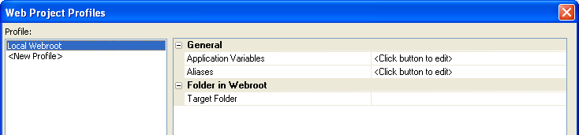
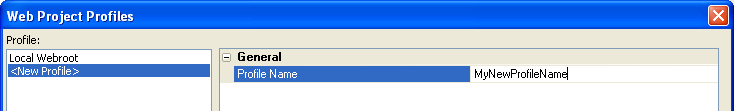
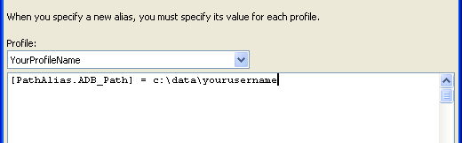
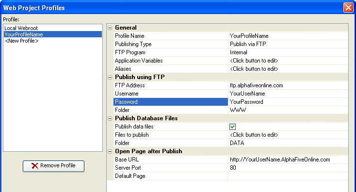
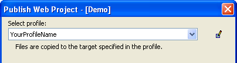

Publishing to AlphaFiveOnline
Here is what you need to do to configure your Alpha Five applications so that they will work with your account.
To configure Alpha Five to publish to your account:
Open the Alpha Five Control Panel.
Select Tools > Web Projects Control Panel to display the Web Projects Control Panel.
Click once on the Web Projects Control Panel so that it becomes the active window.
Select Web > Project Settings to display the Project Settings dialog.

Select "
" from the Profile list. Replace the General > Profile Name with a profile name of your choice.

Select "Publish via FTP" in the General > Publishing Type list.
Click
 in the General > Aliases property
to display the Define Path and Connection Aliases
dialog.
in the General > Aliases property
to display the Define Path and Connection Aliases
dialog.Modify the first entry to the following: PathAlias.ADB_Path =

Click OK to return to the Project Settings dialog.
Change Publish using FTP > FTP Address property to
. Change Publish using FTP > Username property to the
. Change Publish using FTP > Password property to the
. Change Publish using FTP > Folder property to "WWW ".
Check Publish Database Files > Publish data files.
When you know what database files you need to publish, itemize them under Publish Database Files > Files to publish.
Change Publish Database Files > Folder property to "DATA ".
Enter the
or of your website into the Open Page after Publish > Base URL property. Your profile should look something like the following:

Click OK to close the Web Projects Profiles dialog.
Properties of the Web Project Profile
|
Item |
Description |
|
General |
|
|
Profile Name |
Your choice. |
|
Publishing Type |
Always "Publish via FTP". |
|
FTP Program |
"Internal" by default. |
|
Application Variables |
Driven by the requirements of your application. See Path and Connection String Aliases. |
|
Aliases |
You need to define the PathAlias.ADB_Path |
|
Publish Using FTP |
|
|
FTP Address |
|
|
Username |
|
|
Password |
|
|
Folder |
WWW |
|
Publish Data Files |
|
|
Publish data files |
Always checked. |
|
Files to publish |
You need to select the .DBF and any other data files that are required. Remember, access to data files is provided only by your Alpha Five application. |
|
Folder |
DATA |
|
Open Page After Publish |
|
|
Base URL |
|
|
Server Port |
80 |
|
Default Page |
INDEX.A5W |
Alpha Five is now configured to work with AlphaFiveOnline. Later when you click the Publish button in the Web Projects Control Panel, the Publish Web Project dialog box will appear. From the Select Profile drop-down, choose the profile you created when you want to publish to your AlphaFiveOnline account.

See Also
Web Projects, Profiles, and Publishing, Creating a New Profile
Limitations
Web publishing applications only.